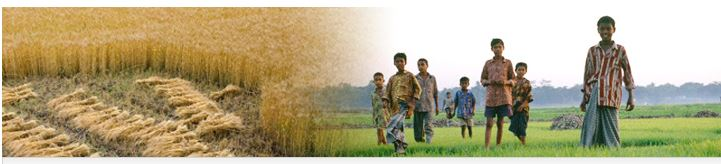

CC & PH have total seven product portfolios as follows:
1.Herbicide
2.Fungicide
3.Liquid Insecticide
4.Granular Insecticide
4.Powder Insecticide
5.Sulphur and others
6.Bio-pesticides
ACI Agribusiness is having strong partnership with national and international R & D companies, universities and research institutions. Before introducing any product, it is elaborately tested in the laboratory and farmers field.
ACI Agribusiness has a large, knowledgeable and highly skilled Field Force provides training and technical advices to the farmers.
Crop Care & Public Health

Crop Care & Public Health
ACI Agribusiness is having strong partnership with national and international R & D companies, universities and research institutions. Before introducing any product, it is elaborately tested in the laboratory and farmers field.
ACI Agribusiness has a large, knowledgeable and highly skilled Field Force provides training and technical advices to the farmersACI Agribusiness is having strong partnership with national and international R & D companies, universities and research institutions. Before introducing any product, it is elaborately tested in the laboratory and farmers field.
ACI Agribusiness has a large, knowledgeable and highly skilled Field Force provides training and technical advices to the farmers..